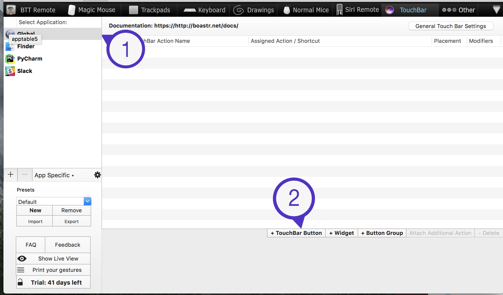
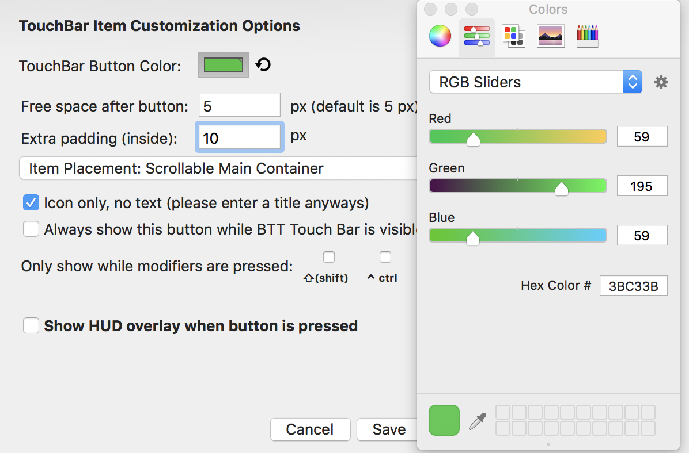
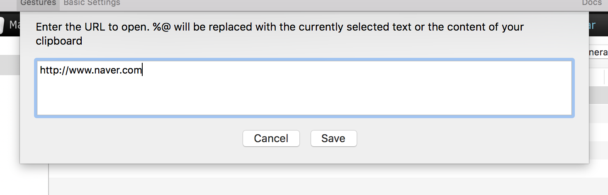
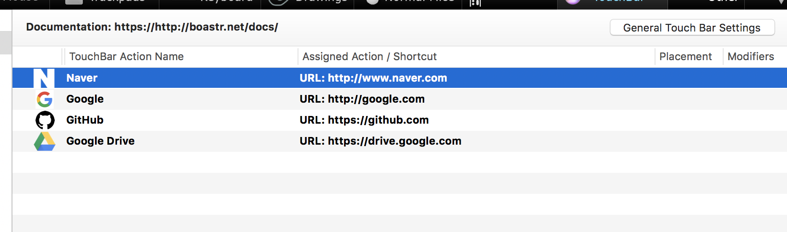

터치바를 쓰다보면 지문과 시스템 환경설정 말고 딱히 건드릴 일이 없다는 생각이 든다.
터치바를 아직 지원하지 않는 앱들이 많고, 익숙하지 않기 때문이다.
그래서 터치바를 좀 더 아름답게 꾸며보기로 했다.
준비할 것은 BetterTouchTool 이라는 앱이다. 올해부터 유료로 전환된 것으로 알고 있다.
하지만 무료 평가판 버전이 있으니 써보고 맘에 들면 결제해도 좋다.

BTT를 설치하고 켜보면 다음과 같은 화면이 난다. 먼저 Global을 설정해보자.
Global 버튼 생성하기
아래의 TouchBar Button을 누르면 새로운 버튼이 생성된다.
Custom Keyboard Shortcut은 단축키를 바로 실행하도록 설정할 수 있고,
Predefined Action은 시스템 설정까지 다양하게 실행하도록 설정할 수 있다.

나 같은 경우 크롬을 켜는 과정조차 귀찮아서 Global은 즐겨찾기처럼 세팅해두었다.
먼저 네이버 바로가기 버튼을 만들어 보자.
Add Icon에 아이콘을 넣어주고 Naver라고 이름을 적는다.
그리고 Advanced Configuration에 들어가서 다음과 같이 설정해준다.
Extra padding을 통해 아이콘 양 옆의 여백을 조정할 수 있다.

마지막으로 Predefined Action에 들어가서 Utility Actions - Open URL을 누르고,
이동할 홈페이지의 주소를 입력한다.

이와 같은 과정을 반복하면 이렇게 버튼을 만들 수 있다 !
PyCharm에 단축키 등록하기
이번에는 PyCharm에 나만의 단축키를 등록해보자.
App Specific에 + 버튼을 누르면 PyCharm을 좌측에 등록시킬 수 있다.
가장 많이 사용하던 자동 들여쓰기를 등록시켜보겠다.
마찬가지로 TouchBar Button을 생성하고, 이름을 적어준다음
이번에는 Custom Keyboard Shortcut에 Ctrl + option + i 를 입력하면 끝
이미지 리소스
https://github.com/Swalloow/Swalloow.github.io/tree/master/assets/images/logo
혹시 이미지 리소스가 필요하신 분들을 위해 올려드립니다.
이것저것 만들다보면 시간이 많이 걸리므로 연휴 때 하는 것을 추천드립니다 !